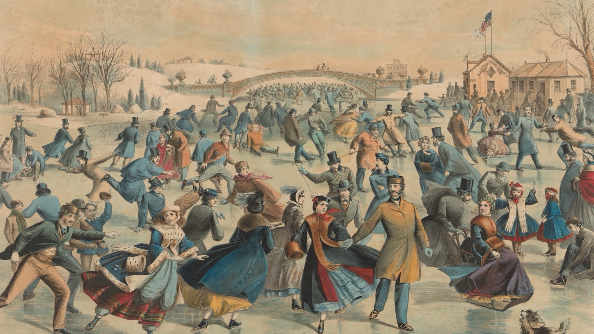
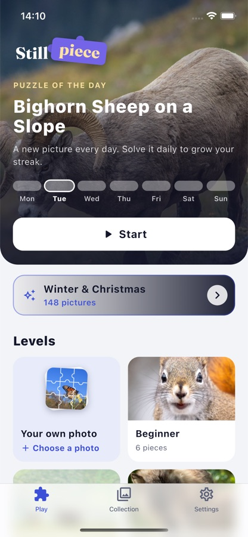
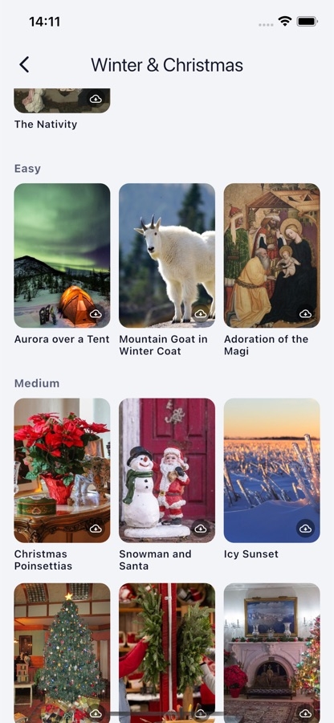
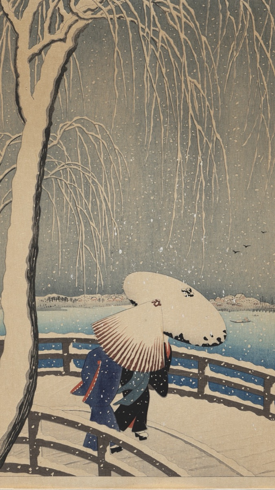

Winter & Christmas

Stillpiece turns real, public-domain art into calm jigsaw puzzles: no timers, no scores, no account, and it works without internet. For the holidays, version 1.4 brings its first seasonal collection: about 140 new artworks, each one picked by hand from museum archives and the photo libraries of America's national parks and wildlife refuges.
Hiroshige's snowy gardens and Harunobu's snow rabbit sit next to Currier & Ives skating ponds, a 15th-century Nativity by Gerard David, the Capitol Christmas tree at night, northern lights over an Alaskan tent, ice caves and sled dogs. One puzzle with the morning coffee, a quiet ritual for the season.
A few pieces from the collection

Umbrellas in SnowOhara Shoson, 1931 · Cleveland Museum of Art 
The Snowy GardenUtagawa Hiroshige, 1854 · Cleveland Museum of Art 
The NativityGerard David, c. 1485–90 · Cleveland Museum of Art 
Young Woman Admiring a Snow RabbitSuzuki Harunobu, late 1760s · Cleveland Museum of Art 
Capitol Christmas Tree at NightU.S. Forest Service, 2018 
Christmas OrnamentsNational Park Service 
Aurora over a TentBureau of Land Management, 2016 
Crystal Ice CaveNational Park Service, 2015 
Happy Sled DogsNational Park Service, 2023 
Fox Diving into SnowNational Park Service, 2016 
Snowy OwlU.S. Fish and Wildlife Service, 2015 
Central Park, Winter: The Skating PondNathaniel Currier, 1862 · Cleveland Museum of Art
In the app



Small on purpose
Stillpiece is a young app made by one developer. It has no ad budget and no growth tricks: no notifications nagging players back (the daily reminder is off unless you turn it on), a streak that forgives a missed day, no loot boxes. Players have found it by word of mouth, so it is still small, which is exactly why a feature would matter. It would put a carefully made, unhurried holiday experience in front of people who would never stumble upon it otherwise.
Facts
- Free to play: every seasonal collection comes with its own free puzzles, separate from the regular levels. One optional rewarded ad unlocks more; Premium removes limits and has no ads.
- Works offline, no account, no data sold; progress syncs with iCloud.
- Accessible: VoiceOver labels, Dynamic Type, Reduce Motion, a large-piece mode and 44-point touch targets.
- Five languages: English, Turkish, German, Spanish and French.
- Honest art: every image is public domain (Cleveland Museum of Art open access, U.S. federal agencies, Library of Congress) and checked one by one for licence and credit. No AI-generated pictures.
- Seasonal by design: collections arrive with the catalog, so new seasons don't need an app update.